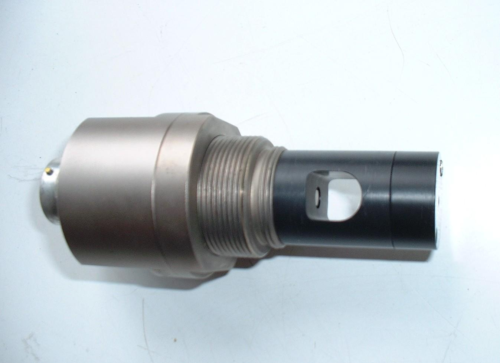

Michell Series 3000 Dewpoint Hygrometer
Purpose of instrument:-
The Michell dewpoint hygrometer uses the chilled-mirror principle, described below, to make a direct
measurement of the dewpoint of the air. This is a fundamental humidity parameter, that is independent of other
parameters, such as the ambient pressure and temperature.
|

|
|
Michell 3000 sensor head
|
Principles of operation:-
The sensor consists of a mirror, fixed onto a Peltier cooling module.
A platinum resistance thermometer (PRT) is embedded in the mirror. An LED light source is directed
at the mirror, and the light is reflected back to a detector. The light detector acts in conjunction
with the Peltier pump, cooling the mirror until dew or frost begins to form on it.
This point is signalled by a drop in the light level received by the detector. In this manner, the temperature of
the mirror is maintained at the temperature of the dewpoint of the ambient air, which is output by the PRT probe.
Every 3 hours or so, the sensor undergoes an Automatic Balance Compensation (ABC) cycle.
This consists of the system heating the mirror to a high temperature to dry the surface, and allows the system
to automatically compensate for any contaminants that have built up on the mirror.
During this ABC cycle, the logging software ignores the data from the hygrometer.
The airflow rate over the sensor needs to be kept below 1.5 litres/minute to reduce the thermal
load on the sensor. The output becomes unstable if this is exceeded. Note that the response time of this sensor is
of the order of several minutes.
Sensor installation:-
The sensor head is mounted in side of the 1.2m temperature screen (aspirated). In order to restrict the
airflow over the sensor, a porous cover (sintered material) is placed over it. This also acts as a filter for
particulates.
Maintenance:-
The build up of dirt on the mirror, happens continuously, but in normal operation this is compensated for by
the ABC operation. However, if the optics become badly contaminated, then a warning light is
illuminated on the control panel, and the optics must be cleaned manually. If left unattended, this typically
occurs after 3-4 weeks of operation. Performance of the sensor can then become unreliable.
To prevent this happening, the policy is to check the unit every week, and clean the optics whenever the warning
light is on, or at least once a month. Cleaning of the optics is carried out using a cotton bud soaked in
isopropyl alcohol, followed by distilled water.